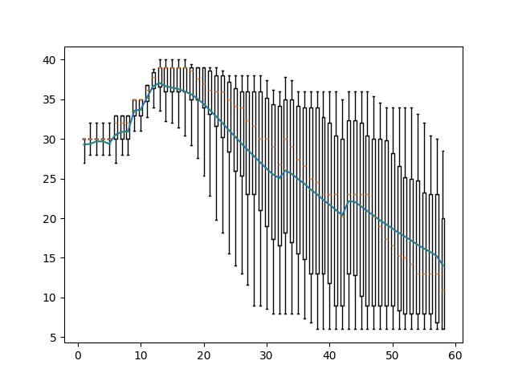
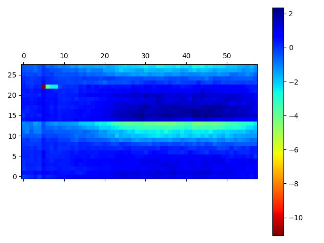
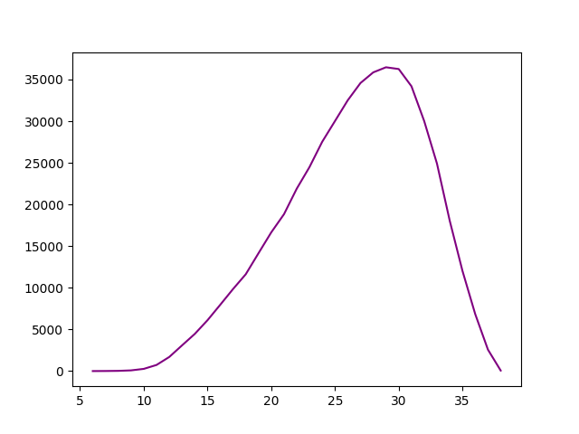
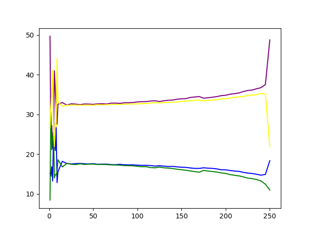
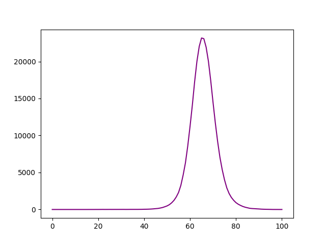
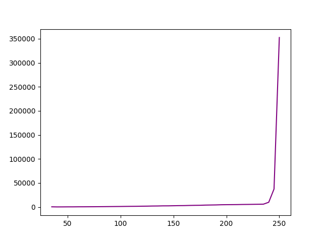
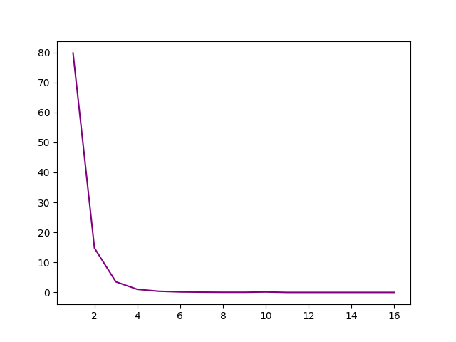
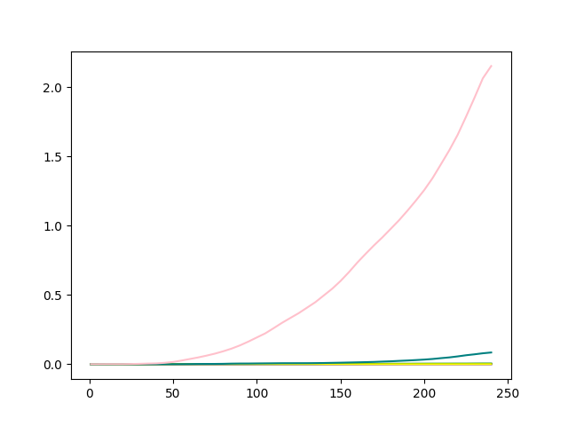

Basic Statistics
{{basic_table | safe}}Per base sequence quality

Per tile sequence quality

Per sequence quality scores

Per base sequence content

Per sequence GC content

Per base N content

Sequence Length Distribution

Sequence Duplication Levels

Overrepresented sequences
Adapter Content

Kmer Content